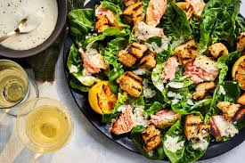

Ultimate Guide to Making Chicken Salad
Chicken Salad is a delicious, refreshing, and versatile dish that can be enjoyed as a sandwich filling,
wrap, or on its own. In this guide, we'll walk you through a simple yet flavorful recipe.
Ingredients
For the Salad:
- 2 cups cooked, shredded or diced chicken breast
- 1/2 cup mayonnaise
- 1/4 cup Greek yogurt (optional, for a lighter version)
- 1/2 cup celery, finely chopped
- 1/4 cup red onion, finely diced
- 1/4 cup sliced almonds (optional)
- 1/2 cup grapes, halved
- 1 tbsp Dijon mustard
- 1 tbsp lemon juice
- Salt and pepper to taste
- Fresh parsley or dill for garnish
Step-by-Step Preparation Process
- Preparing the Ingredients:
- Cook and shred or dice the chicken breast.
- Chop celery, onion, and grapes.
- Toast almonds (if using) for extra crunch.
- Making the Dressing:
- In a mixing bowl, combine mayonnaise, Greek yogurt, Dijon mustard, and lemon juice.
- Whisk until smooth and well combined.
- Season with salt and pepper to taste.
- Combining Everything:
- Add the shredded chicken, celery, onion, grapes, and almonds to the dressing.
- Gently toss until evenly coated.
- Final Touch and Serving:
- Garnish with fresh parsley or dill.
- Serve chilled or at room temperature.
- Enjoy on its own, in a sandwich, or with crackers.
Tips for the Best Chicken Salad
- Use rotisserie chicken for added flavor.
- Chill before serving for best taste.
- Adjust ingredients to taste, such as adding nuts or dried cranberries.
Variations and Customizations
- Avocado Chicken Salad: Replace mayonnaise with mashed avocado.
- Spicy Chicken Salad: Add a dash of hot sauce or cayenne pepper.
- Asian Chicken Salad: Mix in sesame oil, soy sauce, and cabbage.
Storing and Reheating
- Store leftovers in an airtight container for up to 3 days.
- Best served cold; avoid reheating.
Chicken Salad is a quick, easy, and customizable dish perfect for any meal. Follow this guide for a
delicious homemade version!